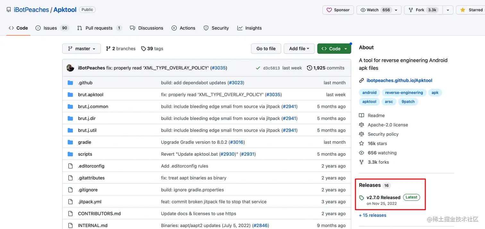
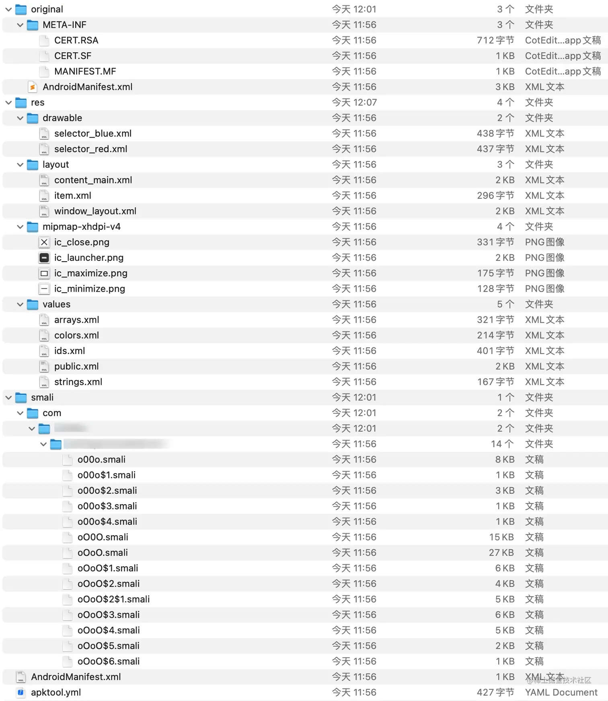
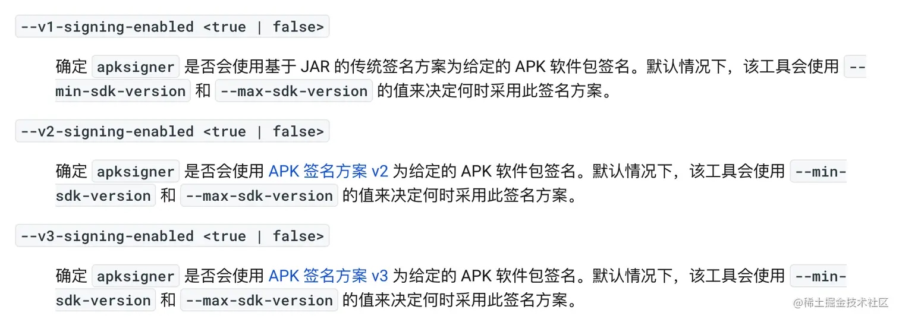

Android 逆向开发是指对已发布的 Android 应用进行分析和破解，以了解应用程序的内部工作原理，获取应用程序的敏感信息，或者修改应用程序的行为。逆向开发可以帮助开发人员了解他人的代码实现，也可以帮助黑客攻击应用程序。
APKTool 介绍
APKTool 是一个开源的、跨平台的反编译、回编译 Android 应用程序的工具。它能够将 APK 文件解压并还原成 Android 应用程序的资源文件和 Smali 代码，还能将修改后的资源文件和 Smali 代码重新打包成 APK 文件。APKTool 是 Android 应用程序开发和逆向开发的重要工具之一，它能够帮助开发者对 APK 文件进行修改、分析和定制，也能够帮助安全研究人员和黑客对应用程序进行逆向工程和漏洞分析。
主要功能包括
-
解压 APK 文件：APKTool 能够将 APK 文件解压为应用程序的源代码和资源文件。解压后的资源文件包括 AndroidManifest.xml、res 目录、assets 目录等；解压后的源代码包括 Java 代码和 Smali 代码。
-
反编译 APK 文件：APKTool 能够将 APK 文件反编译为 Java 代码和 Smali 代码。反编译后的 Java 代码和 Smali 代码能够帮助开发者了解应用程序的逻辑和实现方式，也能够帮助安全研究人员和黑客分析应用程序的漏洞和安全性。
-
重打包 APK 文件：APKTool 能够将修改后的源代码和资源文件重新打包成 APK 文件。重打包后的 APK 文件可以直接安装到 Android 设备上运行，也可以用于二次开发、分析和测试。
-
支持多语言：APKTool 能够处理多语言的应用程序，它支持多种语言的资源文件，可以方便地进行多语言的应用程序开发和本地化。
-
支持自定义：APKTool 提供了多种配置选项，可以根据需要自定义应用程序的打包和解包过程，也可以定制应用程序的资源文件和 Smali 代码。
下载 apktool
- Github 直达链接
- 找到 Releases 选项并点击
 - 找到 Assets 区域，找到 apktool_2.7.0.jar Jar 包进行下载
- 这个 Jar 包在 Window 和 macOs 系统都是通用的。
apk 反编译
- 下载完 jar 后，找一个你想要反编译的 apk，然后输入以下命令即可
java -jar xxx/apktool-2.7.0.jar d xxx/test.apk -o xxx/test
- 然后我们看到到命令行输出完以下指令就证明反编译成功了
I: Using Apktool 2.7.0 on test.apk
I: Loading resource table...
I: Decoding AndroidManifest.xml with resources...
I: Loading resource table from file: /Users/xxx/Library/apktool/framework/1.apk
I: Regular manifest package...
I: Decoding file-resources...
I: Decoding values */* XMLs...
I: Baksmaling classes.dex...
I: Copying assets and libs...
I: Copying unknown files...
I: Copying original files...
- 然后我们看到 test 目录就生成了以下这些文件
 - 那么 apktool 生成这些文件和目录分别是什么呢？
- original 目录：保存了原始的 AndroidManifest.xml 和签名信息
- res 目录：应用程序的资源文件目录，包含了应用程序的布局文件、字符串资源、图片资源等。
- smali 目录：应用程序的 Smali 代码目录，包含了应用程序的所有 Smali 代码文件（Smali 就是字节码）
- assets 目录：应用程序的 assets 目录，包含了应用程序需要使用的各种资源文件，例如音频、视频、图片、配置文件等。
- lib 目录：应用程序的库目录，包含了应用程序需要使用的库文件，例如 so 文件等。
- AndroidManifest.xml：应用程序的清单文件，包含应用程序的名称、包名、版本号、权限等信息。
- apktool.yml：是 APKTool 工具使用的配置文件，用于指定反编译和打包 APK 文件时的各种参数和选项。
apk 回编译
- 反编译完成后，我们可以尝试修改 apk 内容了，我们这里尝试修改 App 名字，方法也简单，在直接修改清单文件的属性值
<?xml version="1.0" encoding="utf-8" standalone="no"?>
<manifest
xmlns:android="http://schemas.android.com/apk/res/android"
package="com.xxx.xxx"
platformBuildVersionCode="25"
platformBuildVersionName="7.1.1">
<uses-permission android:name="android.permission.SYSTEM_ALERT_WINDOW"/>
<application
android:allowBackup="true"
android:icon="@mipmap/ic_launcher"
android:label="我是被反编译修改过的名字"
android:supportsRtl="true"
android:theme="@android:style/Theme.Holo.Light.DarkActionBar">
</application>
</manifest>
- 然后输入以下命令进行回编译
java -jar xxx/apktool-2.7.0.jar b xxx/test -o xxx/test2.apk
- 这句命令的意思是，对 test 目录进行回编译，然后输出到 test.apk 文件
I: Using Apktool 2.7.0
I: Checking whether sources has changed...
I: Smaling smali folder into classes.dex...
W: Unknown file type, ignoring: xxx/test/smali/.DS_Store
W: Unknown file type, ignoring: xxx/test/smali/com/.DS_Store
W: Unknown file type, ignoring: xxx/test/smali/com/toshiba/.DS_Store
I: Checking whether resources has changed...
I: Building resources...
I: Building apk file...
I: Copying unknown files/dir...
I: Built apk into: xxx/test2.apk
- 这个时候我们就可以看到 apk 已经回编译完成了，过程十分简单
- Ps：如果无法进行反编译或者回编译，可以尝试以下方法
- 检查路径包含中文
- 检查当前电脑用户文件夹包含中文
- 检查当前反编译或者回编译输入和输出的路径包含中文
- 更换
apktool jar包版本 - 指定
framework-res.apk- 提取高版本的
framework-res.apk（存放在/system/framework目录下） - 提取完后放到某个文件夹中并且重名为
1.apk，这里示例放在了framework-res/1.apk - 在反编译或者回编译的时候，在命令尾处加入
-p xxx/framework-res/来指定framework-res.apk文件
- 提取高版本的
- 检查路径包含中文
apk 签名
- 这个时候回编译出来的 apk 还不能安装到手机上面，因为它还有没有签名，需要先进行签名，说到签名，就必须要介绍的两个工具
- jarsigner：是 JDK 自带的工具，用于给 Java 程序的 jar 包进行数字签名。该工具可以对 jar 包进行签名、验证签名、查看签名信息等操作，可以用于保证 Java 程序的完整性和安全性。
- apksigner：是 Android SDK 自带的工具，用于给 Android 应用程序进行数字签名。该工具可以对 APK 文件进行签名、验证签名、查看签名信息等操作，可以用于保证 Android 应用程序的完整性和安全性。
- 这两者不同之处在于，jarsigner 只能进行 v1 签名，而 apksigner 可以进行 v1 + v2 + v3 签名，那么这几种签名方式分别有什么区别呢？
- v1 签名：基于签名的 Jar 包的方案，但是有如下两个缺陷：
- 有篡改的风险：META-INF 目录用来存放签名，自然此目录本身是不计入签名校验过程的，可以随意在这个目录中添加文件，比如一些快速批量打包方案就选择在这个目录中添加渠道文件。
- apk 校验速度慢：校验过程中需要对 apk 中所有文件进行解压和摘要计算（ SHA-256 ），在 APK 资源很多、性能较差的机器上签名校验会花费较长时间，导致安装速度慢。
- v2 签名（Android 7.0 引入）：对整个 apk 进行签名（通过二进制流运算出哈希值），解决了 v1 带来的问题。v2 签名会在 apk 块中新增一个签名块，里面中存储了签名、签名算法、摘要等。一个签名块还可以包含多个 id 和 value，apk 的签名信息会存放在 ID 为 0x7109871a 的键值对里，而 美团多渠道打包(瓦力) 正是直接将渠道信息通过添加到签名块的 id 和 value 中。
- v3 签名（Android 9.0 引入）：在 v2 的签名块里面添加了一个 ID 为 0xf05368c0 的新块（证书块），在这里支持添加多个签名证书（可以看成单链表），由此来做证书替换和升级。
- v1 签名：基于签名的 Jar 包的方案，但是有如下两个缺陷：
- 签名兼容过程：为了最大限度地提高兼容性，会按照 v1、v2、v3 的先后顺序采用所有方案对应用进行签名，系统验证签名方案是从高往低走，如果没有 v2 签名，才会用 v1 签名对 apk 进行校验。另外如果 targetSdk 已经适配 Android 11 版本及以上，那么如果 apk 不签名 v2 会无法安装到 Android 11 的机型上面，需要注意的是，对于覆盖安装的情况，签名校验只支持升级，而不支持降级。也就是说设备上安装了一个使用 v1 签名的 APK，可以使用 v2 签名的 APK 进行覆盖安装，反之则不允许。
- 了解了 Android 相关的知识点，所以我们这里选择 apksigner 来签名，签名命令如下：
java -jar sdk/build-tools/33.0.0/lib/apksigner.jar sign --ks "密钥库文件路径" --ks-pass pass:"密钥库密码" --ks-key-alias "密钥别名" --key-pass pass:"密钥别名密码" --out 签名后输出的文件.apk 需要被签名的文件.apk
-
上面的命令解释如下：
sign：使用 apksigner 工具进行数字签名操作--ks：指定签名证书的 keystore 文件路径--ks-pass pass：指定签名证书的 keystore 密码--ks-key-alias：指定签名证书的别名--key-pass pass：指定签名证书的别名密码--out：指定签名后的 APK 文件名
-
那么我如果想指定
apksigner签名方案，需要怎么做呢？我们可以在 Android 官网 找到答案
 -
如果我要同时签名 v1 + v2 + v3 方案，那么可以将上面的命令修改成下面这样
java -jar sdk/build-tools/33.0.0/lib/apksigner.jar sign --v1-signing-enabled true --v2-signing-enabled true --v3-signing-enabled true --ks "密钥库文件路径" --ks-pass pass:"密钥库密码" --ks-key-alias "密钥别名" --key-pass pass:"密钥别名密码" --out 签名后输出的文件.apk 需要被签名的文件.apk
- 我如果签名完了，如何去验证 apk 签名？可以输入以下命令进行验证
java -jar sdk/build-tools/33.0.0/lib/apksigner.jar sign verify -verbose -print-certs 需要验证签名的文件.apk
Verified using v1 scheme (JAR signing): true
Verified using v2 scheme (APK Signature Scheme v2): true
Verified using v3 scheme (APK Signature Scheme v3): true
Verified using v3.1 scheme (APK Signature Scheme v3.1): false
Verified using v4 scheme (APK Signature Scheme v4): false
- 当然还有另外一种土方子，就是在知道 apk 有签名的情况下，但是你只想知道 apk 有没有用 v2 以上的签名方案，又嫌输入命令行太麻烦，可以通过这种方式来判断：可以在 apk 根目录找到 META-INF/CERT.SF 文件，如果其文件头有
X-Android-APK-Signed字段，证明使用了 v2 以上的签名方式，如果没有则可能使用了 v1 的签名或者没有签名。
总结
经过上面的反编译、修改 apk 应用名称、回编译、apk 签名，我们就可以进行安装了